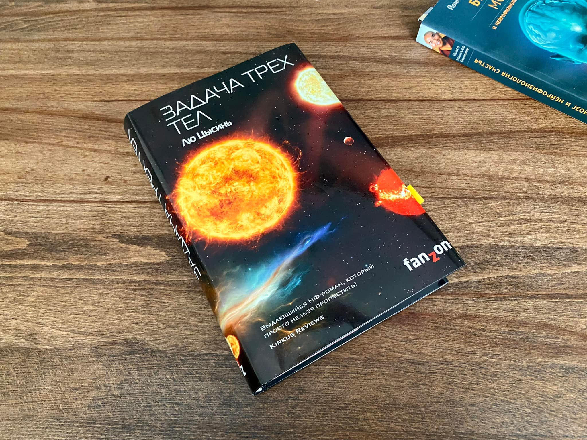

Первое фантастическое произведение, прочитанное мной в этом сезоне.
«Задача трёх тел» — весьма распиаренная книга. Это произведение, написанное в жанре научной фантастики китайским автором Лю Цисинем. Первая переводная книга, номинированная на престижные литературные премии в области фантастики.

Сюжет книги разворачивается после китайской культурной революции в 60-х годах прошлого века. Действие предыдущей книги, которую я читал, происходило в то же время, правда в России. Такие пересечения между книгами я замечаю всё чаще и думаю попробовать создать карту связей между прочитанными книгами. Как у детективов (детектив тоже, кстати, скоро будет).
Несмотря на романтичное название революции — «культурная», её итогом стала глубокая стагнация и даже уничтожение китайской культуры и науки. Главная героиня книги Е Ваньцзе, дочь профессора китайского университета, присутствовала при казни отца хунвэйбинами и отречении своей матери от мужа. Её сестра примкнула к хунвэйбинам и бессмысленно погибла в одном из боёв. Героине книги удаётся выжить, оставив свои убеждения и даже вернуться к науке в рамках военного проекта.
Наблюдая ужасы, которые могут совершать люди со своими близкими, и разочаровавшись в них, Е Ваньцзе обманывает своих руководителей и, используя военное коммуникационное оборудование, отправляет в космос сигналы, чтобы установить контакт с инопланетным разумом.
Сигнал принимает цивилизация, которая сама находится на краю гибели. Для неё наша планета — последний шанс.
Есть такой фильм — «Клён». Не знаю, ты смотрела, нет? Там в конце взрослый и ребенок стоят на могиле хунвэйбина, погибшего во время фракционных войн. Ребенок спрашивает: «Они герои, да?». Взрослый отвечает: «Нет». Тогда ребенок спрашивает: «Они злодеи?». Взрослый отвечает: «Нет». «А кто же они тогда?» — спрашивает ребенок, и взрослый отвечает: «История».
Книга перекликается не только с 60-ми.